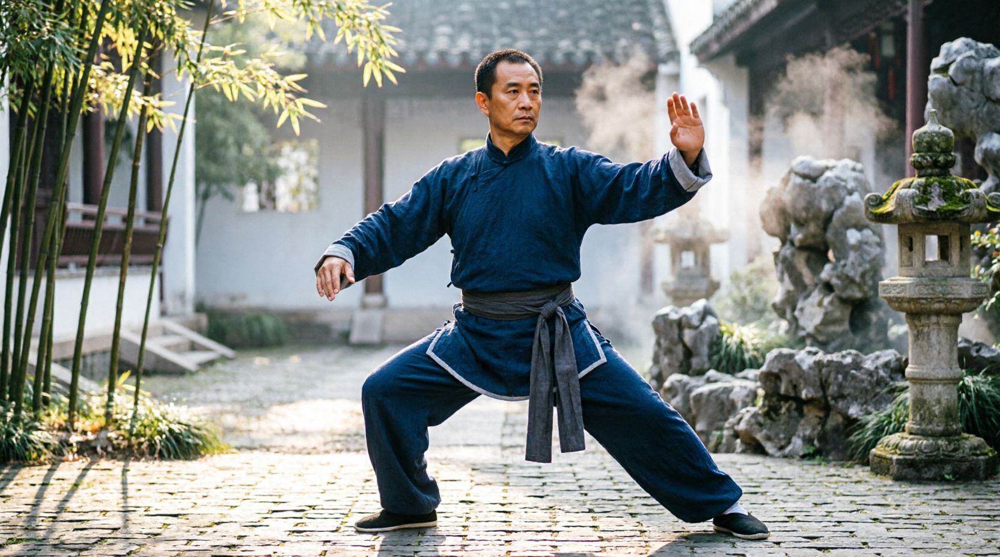

Instructor de Tai Chi
Clases grupales enfocadas en bienestar integral, reducción de estrés y desarrollo de equilibrio físico-mental para alumnos de todos los niveles.

🧘 Transformá tu cuerpo y tu mente
Clases de Tai Chi para mejorar tu salud, reducir el estrés y encontrar equilibrio. Sin experiencia previa necesaria.
Clases grupales enfocadas en bienestar integral, reducción de estrés y desarrollo de equilibrio físico-mental para alumnos de todos los niveles.
Enseñanza de estilos tradicionales Chen y Yang. Formación de alumnos desde cero hasta nivel avanzado, con enfoque en salud, técnica y filosofía del arte marcial.
Introducción al Tai Chi para la comunidad del club, promoviendo actividad física consciente y accesible para personas de todas las edades.
Entrenamiento intensivo en la cuna del Tai Chi Chen. Participación en competencias internacionales y profundización en técnicas tradicionales y aplicaciones marciales.
Escríbeme a: chenmail@email.com
📞 099 199 458